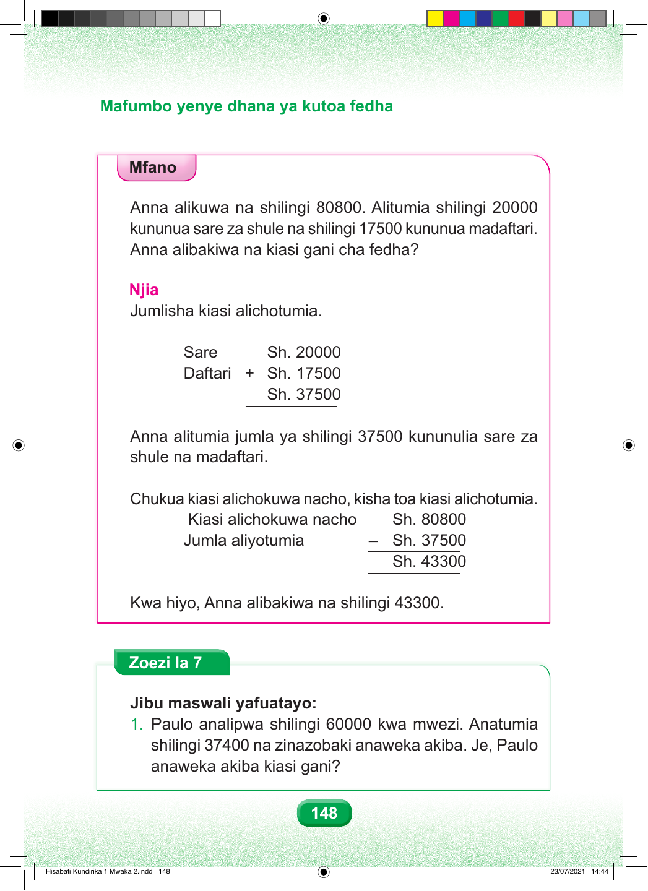

Mafumbo yenye dhana ya kutoa fedha Mfano Anna alikuwa na shilingi 80800. Alitumia shilingi 20000 kununua sare za shule na shilingi 17500 kununua madaftari. Anna alibakiwa na kiasi gani cha fedha? Njia Jumlisha kiasi alichotumia. Sare Sh. 20000 Daftari + Sh. 17500 Sh. 37500 Anna alitumia jumla ya shilingi 37500 kununulia sare za shule na madaftari. Chukua kiasi alichokuwa nacho, kisha toa kiasi alichotumia. Kiasi alichokuwa nacho Sh. 80800 Jumla aliyotumia – Sh. 37500 Sh. 43300 Kwa hiyo, Anna alibakiwa na shilingi 43300. Zoezi la 7 Jibu maswali yafuatayo: 1. Paulo analipwa shilingi 60000 kwa mwezi. Anatumia shilingi 37400 na zinazobaki anaweka akiba. Je, Paulo anaweka akiba kiasi gani? 148 Hisabati Kundirika 1 Mwaka 2.indd 148 23/07/2021 14:44